1. Les objectifs de la démarche scientifique
Le projet vise à se confronter à la pratique d'une démarche scientifique structurée selon les étapes suivantes :
- Problématique et hypothèses
- Expérience et Résultats
- Interprétation et Conclusion
2. Méthodologie : Comment procéder ?
Le travail s'effectue obligatoirement par groupe de 3 élèves. La démarche repose sur :
- L'utilisation d'un capteur durant l'expérimentation (ex: Arduino, capteur du téléphone via Fizziq, microbit, caméra thermique, thermomètre, etc.).
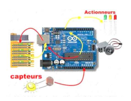
- L'acquisition numérique de données en réalisant plusieurs acquisitions pour tester différentes conditions, différents capteurs et vérifier la répétabilité.
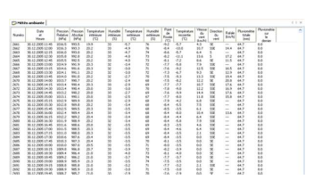
- La présentation, le traitement et l'interprétation des données via l'utilisation d'outils statistiques et le choix d'une représentation graphique adaptée.
Exemple de traitement de données
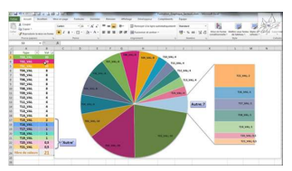
Représentation visuelle des acquisitions de données à l'aide d'outils statistiques.
3. Idées de projets et thématiques
Biologie & Santé
- Germination : Établir un lien entre la germination des plantes et la luminosité.
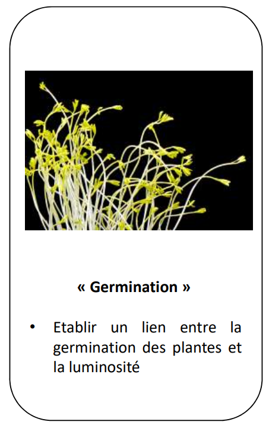
- Effort et température : Mesure de l'évolution de la température de différentes parties du corps lors d'efforts physiques.
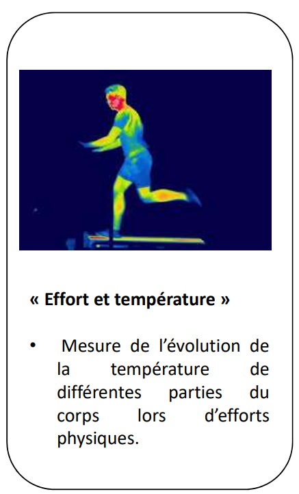
- Impact du CO2 dans l’acidification des océans : Mesure du taux de CO2 dans les salles de classe, étude du renouvellement de l'air et de la nécessité d'aérer.
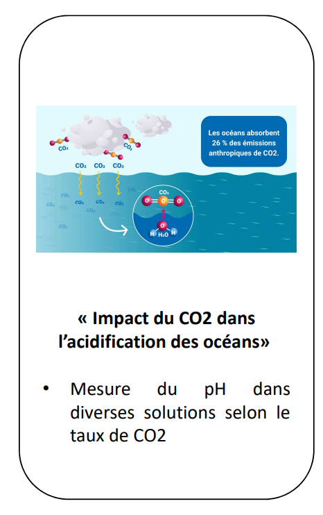
Acoustique & Ondes
- Silence je travaille : Mesure de différents niveaux sonores dans le Lycée selon l'horaire et l'endroit.
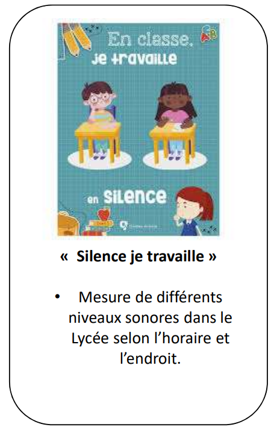
- Tasse et Fréquence : Mesure des fréquences fondamentales des sons émis lors du tapotement du fond d'une tasse de café.
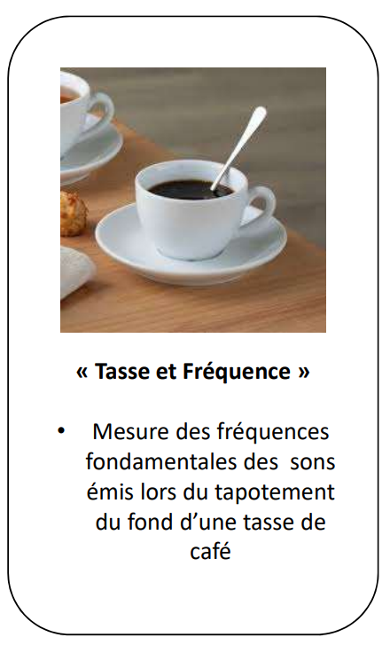
- Chladni : Faire le lien entre la forme du plateau, la fréquence et la figure géométrique du son.
Projets d'établissement en cours
- La Ruche : Comparer plusieurs sites propices dans l'enceinte du lycée (favoriser l'envol, éviter les extrêmes) et identifier les paramètres nécessaires à la bonne santé des abeilles en testant des capteurs.
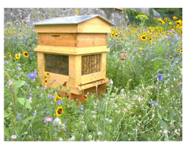
- Comparer plusieurs sites propices dans l'enceinte du lycée.
- Identifier les paramètres nécessaires à une bonne situation de la ruche (favoriser l'envol des abeilles, éviter les extrêmes climatiques...).
- Surveiller la santé de la colonie en identifiant les paramètres biologiques et environnementaux essentiels.
- Construire et tester des capteurs adaptés pour le suivi technique.
- Mesurer la production de miel de manière précise.
- Projet Basse Vision : Installer au sein du lycée un système permettant à des personnes malvoyantes de se repérer à l'aide de bracelets émetteurs et de boîtiers.
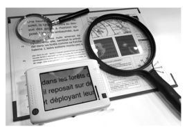
- Les personnes porteraient un bracelet émetteur comportant un/plusieurs boutons déclenchant une réponse indiquant la localisation et provenant de boîtiers situés à différents endroits du lycée.
- Quel est le niveau sonore nécessaire pour que la réponse des boîtiers soit audible quel que soit le moment de la journée ?
- Suite à la sensibilisation réalisée avec l'association BruitParif : le niveau sonore dans le lycée (Couloirs ? Cantine ? Salle de classe ?) est-il satisfaisant ?
- Qualité de l'air : Mesure du taux de CO2 dans les salles de classe, étude du renouvellement de l'air et de la nécessité d'aérer.
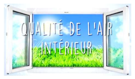
- Quelle est la qualité de l'air dans les salles de classe avant / après cours ?
- Faut-il aérer les salles de classe ? À quelle fréquence ?
- Définir la qualité de l'air.
- Identifier les paramètres qui peuvent varier.
4. Par où commencer ?
- S'organiser : Former un groupe de 3 ou 4 élèves.
- Brainstorming : Trouver une idée séduisante, y associer des mots spontanés, trouver un paramètre mesurable et lui associer un capteur pour formuler une problématique.
- Validation : Choisir un projet et envoyer un mail via l'ENT à votre professeur en indiquant le nom des élèves et le titre du projet. Attention : Premier arrivé, premier servi !
- Suivi : Tenir un carnet de bord pour écrire votre avancée séance après séance.
5. Impact et Évaluation
Ce projet sert d'entraînement pour le grand oral de terminale et inclut la réalisation d'un poster scientifique pour communiquer au sein de l'établissement.
| Critère d'évaluation |
Points |
| Investissement (individuel et du groupe) |
20 |
| Poster scientifique |
20 |
| Présentation orale (10 min de présentation + 5-10 min de discussion avec le jury) |
20 |